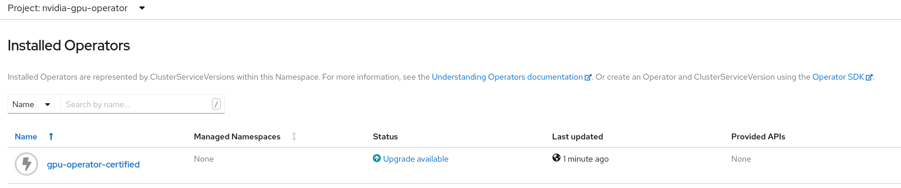
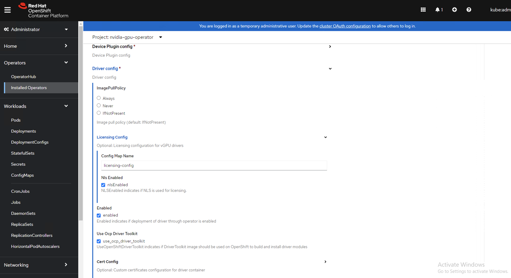

Installing the NVIDIA GPU Operator on OpenShift#
Installing the NVIDIA GPU Operator by using the web console#
In the OpenShift Container Platform web console, from the side menu, navigate to Operators > OperatorHub and select All Projects.
In Operators > OperatorHub, search for the NVIDIA GPU Operator. For additional information, refer to the Red Hat OpenShift Container Platform documentation.
In Operators > OperatorHub, search for the NVIDIA GPU Operator. For additional information, refer to the Red Hat OpenShift Container Platform documentation.
Select the NVIDIA GPU Operator, click Install. In the following screen, click Install.
Note
Here, you can select the namespace where you want to deploy the GPU Operator. The suggested namespace to use is the
nvidia-gpu-operator. You can choose any existing namespace or create a new namespace under Select a Namespace.If you install in any other namespace other than
nvidia-gpu-operator, the GPU Operator does not automatically enable namespace monitoring, and metrics and alerts are not collected by Prometheus. If only trusted operators are installed in this namespace, you can manually enable namespace monitoring with this command:$ oc label ns/$NAMESPACE_NAME openshift.io/cluster-monitoring=true
Proceed to Create the cluster policy for the NVIDIA GPU Operator.
Installing the NVIDIA GPU Operator using the CLI#
As a cluster administrator, you can install the NVIDIA GPU Operator using the OpenShift CLI (oc).
Create a namespace for the NVIDIA GPU Operator.
Create the following
Namespacecustom resource (CR) that defines thenvidia-gpu-operatornamespace and then save the YAML in thenvidia-gpu-operator.yamlfile:apiVersion: v1 kind: Namespace metadata: name: nvidia-gpu-operator
Note
The suggested namespace to use is the
nvidia-gpu-operator. You can choose any existing namespace or create a new namespace. If you install in any other namespace other thannvidia-gpu-operator, the GPU Operator will not automatically enable namespace monitoring, and metrics and alerts will not be collected by Prometheus.If only trusted operators are installed in this namespace, you can manually enable namespace monitoring with this command:
$ oc label ns/$NAMESPACE_NAME openshift.io/cluster-monitoring=true
Create the namespace by running the following command:
$ oc create -f nvidia-gpu-operator.yamlnamespace/nvidia-gpu-operator created
Install the NVIDIA GPU Operator in the namespace you created in the previous step by creating the following objects:
Create the following
OperatorGroupCR and save the YAML in thenvidia-gpu-operatorgroup.yamlfile:apiVersion: operators.coreos.com/v1 kind: OperatorGroup metadata: name: nvidia-gpu-operator-group namespace: nvidia-gpu-operator spec: targetNamespaces: - nvidia-gpu-operator
Create the
OperatorGroupCR by running the following command:$ oc create -f nvidia-gpu-operatorgroup.yamloperatorgroup.operators.coreos.com/nvidia-gpu-operator-group created
Run the following command to get the
channelvalue required for step 5.$ oc get packagemanifest gpu-operator-certified -n openshift-marketplace -o jsonpath='{.status.defaultChannel}'
Example Output
v22.9Run the following commands to get the
startingCSVvalue required for step 5.$ CHANNEL=v22.9
$ oc get packagemanifests/gpu-operator-certified -n openshift-marketplace -ojson | jq -r '.status.channels[] | select(.name == "'$CHANNEL'") | .currentCSV'
Example Output
gpu-operator-certified.v22.9.0Create the following
SubscriptionCR and save the YAML in thenvidia-gpu-sub.yamlfile:apiVersion: operators.coreos.com/v1alpha1 kind: Subscription metadata: name: gpu-operator-certified namespace: nvidia-gpu-operator spec: channel: "v22.9" installPlanApproval: Manual name: gpu-operator-certified source: certified-operators sourceNamespace: openshift-marketplace startingCSV: "gpu-operator-certified.v22.9.0"
Note
Update the
channelandstartingCSVfields with the information returned in steps 3 and 4.Create the subscription object by running the following command:
$ oc create -f nvidia-gpu-sub.yamlsubscription.operators.coreos.com/gpu-operator-certified createdOptional: Log in to the web console and navigate to the Operators > Installed Operators page. In the
Project: nvidia-gpu-operatorthe following is displayed:Verify an install plan has been created:
$ oc get installplan -n nvidia-gpu-operatorExample Output
NAME CSV APPROVAL APPROVED install-wwhfj gpu-operator-certified.v22.9.0 Manual false
Approve the install plan using the CLI commands:
$ INSTALL_PLAN=$(oc get installplan -n nvidia-gpu-operator -oname)
$ oc patch $INSTALL_PLAN -n nvidia-gpu-operator --type merge --patch '{"spec":{"approved":true }}'
Example Output
installplan.operators.coreos.com/install-wwhfj patchedAlternatively click
Upgrade availableand approve the plan using the web console:Optional: Verify the successful install in the web console. The display changes to:

Create the ClusterPolicy instance#
When you install the NVIDIA GPU Operator in the OpenShift Container Platform, a custom resource definition for a ClusterPolicy is created. The ClusterPolicy configures the GPU stack, configuring the image names and repository, pod restrictions and credentials, and more.
Note
If you create a ClusterPolicy that contains an empty specification such as spec{}, the ClusterPolicy fails to deploy.
As a cluster administrator, you can create a ClusterPolicy using the OpenShift Container Platform CLI or the web console. Also, these steps differ when using NVIDIA vGPU. Refer to the appropriate sections below.
Create the cluster policy using the web console#
In the OpenShift Container Platform web console, from the side menu, select Operators > Installed Operators, and click NVIDIA GPU Operator.
Select the ClusterPolicy tab, then click Create ClusterPolicy. The platform assigns the default name gpu-cluster-policy.
Note
You can use this screen to customize the ClusterPolicy. However, the default values are sufficient to get the GPU configured and running in most cases.
Note
For OpenShift 4.12 with GPU Operator 25.3.1 or later, you must expand the Driver section and set the following fields:
version: 570.172.08 (or another supported version)
image: driver (or another supported image)
repository: nvcr.io/nvidia (or another supported repository)
Click Create.
At this point, the GPU Operator proceeds and installs all the required components to set up the NVIDIA GPUs in the OpenShift 4 cluster. Wait at least 10 to 20 minutes before troubleshooting because this process can take some time to finish.
The status of the newly deployed ClusterPolicy gpu-cluster-policy for the NVIDIA GPU Operator changes to
State:readywhen the installation succeeds.
Create the cluster policy using the CLI#
Create the ClusterPolicy:
$ oc get csv -n nvidia-gpu-operator gpu-operator-certified.v22.9.0 -ojsonpath={.metadata.annotations.alm-examples} | jq .[0] > clusterpolicy.json
Note
For OpenShift 4.12 with GPU Operator 25.3.1 or later, modify the
clusterpolicy.jsonfile to specifydriver.licensingConfig,driver.repository,driver.image,driver.version, anddriver.imagePullSecrets(optional). The following snippet is shown as an example. Change values accordingly. Refer to Release Notes for recommended driver versions."driver": { "repository": "nvcr.io/nvidia", "image": "driver", "version": "570.172.08" }
$ oc apply -f clusterpolicy.jsonclusterpolicy.nvidia.com/gpu-cluster-policy created
Create the ClusterPolicy instance with NVIDIA vGPU#
Prerequisites#
Refer to the Using NVIDIA vGPU section for prerequisite steps for using NVIDIA vGPU on Red Hat OpenShift.
Create the cluster policy using the web console#
In the OpenShift Container Platform web console, from the side menu, select Operators > Installed Operators, and click NVIDIA GPU Operator.
Select the ClusterPolicy tab, then click Create ClusterPolicy. The platform assigns the default name gpu-cluster-policy.
Provide the name of the licensing
ConfigMapunder the Driver section. This should be created during the prerequisite steps for NVIDIA vGPU. Refer to the following screenshots for examples and modify values accordingly.Specify the
repositorypath,imagename, and NVIDIA vGPU driverversionbundled under the Driver section. If the registry is not public, specify theimagePullSecretcreated during the prerequisite step under the Driver advanced configurations section.
Click Create.
At this point, the GPU Operator proceeds and installs all the required components to set up the NVIDIA GPUs in the OpenShift 4 cluster. Wait at least 10 to 20 minutes before troubleshooting because this process can take some time to finish.
The status of the newly deployed ClusterPolicy gpu-cluster-policy for the NVIDIA GPU Operator changes to
State:readywhen the installation succeeds.
Create the cluster policy using the CLI#
Create the ClusterPolicy:
$ oc get csv -n nvidia-gpu-operator gpu-operator-certified.v22.9.0 -ojsonpath={.metadata.annotations.alm-examples} | jq .[0] > clusterpolicy.json
Modify the
clusterpolicy.jsonfile to specifydriver.licensingConfig,driver.repository,driver.image,driver.version, anddriver.imagePullSecretscreated during the prerequisite steps. The following snippet is shown as an example. Change values accordingly."driver": { "repository": "<repository-path>", "image": "driver", "imagePullSecrets": [], "licensingConfig": { "configMapName": "licensing-config", "nlsEnabled": true }, "version": "470.82.01" }
$ oc apply -f clusterpolicy.jsonclusterpolicy.nvidia.com/gpu-cluster-policy created
Verify the successful installation of the NVIDIA GPU Operator#
Verify the successful installation of the NVIDIA GPU Operator as shown here:
Run the following command to view these new pods and daemonsets:
$ oc get pods,daemonset -n nvidia-gpu-operatorNAME READY STATUS RESTARTS AGE pod/gpu-feature-discovery-c2rfm 1/1 Running 0 6m28s pod/gpu-operator-84b7f5bcb9-vqds7 1/1 Running 0 39m pod/nvidia-container-toolkit-daemonset-pgcrf 1/1 Running 0 6m28s pod/nvidia-cuda-validator-p8gv2 0/1 Completed 0 99s pod/nvidia-dcgm-exporter-kv6k8 1/1 Running 0 6m28s pod/nvidia-dcgm-tpsps 1/1 Running 0 6m28s pod/nvidia-device-plugin-daemonset-gbn55 1/1 Running 0 6m28s pod/nvidia-device-plugin-validator-z7ltr 0/1 Completed 0 82s pod/nvidia-driver-daemonset-410.84.202203290245-0-xxgdv 2/2 Running 0 6m28s pod/nvidia-node-status-exporter-snmsm 1/1 Running 0 6m28s pod/nvidia-operator-validator-6pfk6 1/1 Running 0 6m28s NAME DESIRED CURRENT READY UP-TO-DATE AVAILABLE NODE SELECTOR AGE daemonset.apps/gpu-feature-discovery 1 1 1 1 1 nvidia.com/gpu.deploy.gpu-feature-discovery=true 6m28s daemonset.apps/nvidia-container-toolkit-daemonset 1 1 1 1 1 nvidia.com/gpu.deploy.container-toolkit=true 6m28s daemonset.apps/nvidia-dcgm 1 1 1 1 1 nvidia.com/gpu.deploy.dcgm=true 6m28s daemonset.apps/nvidia-dcgm-exporter 1 1 1 1 1 nvidia.com/gpu.deploy.dcgm-exporter=true 6m28s daemonset.apps/nvidia-device-plugin-daemonset 1 1 1 1 1 nvidia.com/gpu.deploy.device-plugin=true 6m28s daemonset.apps/nvidia-driver-daemonset-410.84.202203290245-0 1 1 1 1 1 feature.node.kubernetes.io/system-os_release.OSTREE_VERSION=410.84.202203290245-0,nvidia.com/gpu.deploy.driver=true 6m28s daemonset.apps/nvidia-mig-manager 0 0 0 0 0 nvidia.com/gpu.deploy.mig-manager=true 6m28s daemonset.apps/nvidia-node-status-exporter 1 1 1 1 1 nvidia.com/gpu.deploy.node-status-exporter=true 6m29s daemonset.apps/nvidia-operator-validator 1 1 1 1 1 nvidia.com/gpu.deploy.operator-validator=true 6m28s
The
nvidia-driver-daemonsetpod runs on each worker node that contains a supported NVIDIA GPU.Note
When the Driver Toolkit is active, the
DaemonSetis namednvidia-driver-daemonset-<RHCOS-version>. WhereRHCOS-versionequals<OCP XY>.<RHEL XY>.<related date YYYYMMDDHHSS-0. The pods of theDaemonSetare namednvidia-driver-daemonset-<RHCOS-version>-<UUID>.
Cluster monitoring#
The GPU Operator generates GPU performance metrics (DCGM-export), status metrics (node-status-exporter) and node-status alerts. For OpenShift Prometheus to collect these metrics, the namespace hosting the GPU Operator must have the label openshift.io/cluster-monitoring=true.
When the GPU Operator is installed in the suggested nvidia-gpu-operator namespace, the GPU Operator automatically enables monitoring if the openshift.io/cluster-monitoring label is not defined.
If the label is defined, the GPU Operator will not change its value.
Disable cluster monitoring in the nvidia-gpu-operator namespace by setting openshift.io/cluster-monitoring=false:
$ oc label ns/nvidia-gpu-operator openshift.io/cluster-monitoring=false
If the GPU Operator is not installed in the suggested namespace, the GPU Operator will not automatically enable monitoring. Set the label manually as shown:
$ oc label ns/$NAMESPACE openshift.io/cluster-monitoring=true
Note
Only do this if trusted operators are installed in this namespace.
Logging#
The nvidia-driver-daemonset pod has two containers.
Run the following to examine the logs associated with the
nvidia-driver-ctr:Note
This log shows the main container waiting for the driver binary, and loading it in memory.
$ oc logs -f nvidia-driver-daemonset-410.84.202203290245-0-xxgdv -n nvidia-gpu-operator -c nvidia-driver-ctrRun the following to examine the logs associated with the
openshift-driver-toolkit-ctr:Note
This log shows the driver being built.
$ oc logs -f nvidia-driver-daemonset-410.84.202203290245-0-xxgdv -n nvidia-gpu-operator -c openshift-driver-toolkit-ctr
Running a sample GPU Application#
Run a simple CUDA VectorAdd sample that adds two vectors together to ensure the GPUs have bootstrapped correctly.
Run the following:
$ cat << EOF | oc create -f - apiVersion: v1 kind: Pod metadata: name: cuda-vectoradd spec: restartPolicy: OnFailure containers: - name: cuda-vectoradd image: "nvcr.io/nvidia/k8s/cuda-sample:vectoradd-cuda12.5.0-ubi8" resources: limits: nvidia.com/gpu: 1 EOF
pod/cuda-vectoradd createdCheck the logs of the container:
$ oc logs cuda-vectoradd[Vector addition of 50000 elements] Copy input data from the host memory to the CUDA device CUDA kernel launch with 196 blocks of 256 threads Copy output data from the CUDA device to the host memory Test PASSED Done
Getting information about the GPU#
The nvidia-smi command shows memory usage, GPU utilization, and the temperature of the GPU. Test the GPU access by running the popular nvidia-smi command within the pod.
To view GPU utilization, run nvidia-smi from a pod in the GPU Operator daemonset.
Change to the nvidia-gpu-operator project:
$ oc project nvidia-gpu-operatorRun the following command to view these new pods:
$ oc get pod -owide -lopenshift.driver-toolkit=true
NAME READY STATUS RESTARTS AGE IP NODE NOMINATED NODE READINESS GATES nvidia-driver-daemonset-410.84.202203290245-0-xxgdv 2/2 Running 0 23m 10.130.2.18 ip-10-0-143-147.ec2.internal <none> <none>
Note
With the pod and node name, run the
nvidia-smicommand on the correct node.Run the
nvidia-smicommand within the pod:$ oc exec -it nvidia-driver-daemonset-410.84.202203290245-0-xxgdv -- nvidia-smi
Defaulted container "nvidia-driver-ctr" out of: nvidia-driver-ctr, openshift-driver-toolkit-ctr, k8s-driver-manager (init) Mon Apr 11 15:02:23 2022 +-----------------------------------------------------------------------------+ | NVIDIA-SMI 510.47.03 Driver Version: 510.47.03 CUDA Version: 11.6 | |-------------------------------+----------------------+----------------------+ | GPU Name Persistence-M| Bus-Id Disp.A | Volatile Uncorr. ECC | | Fan Temp Perf Pwr:Usage/Cap| Memory-Usage | GPU-Util Compute M. | | | | MIG M. | |===============================+======================+======================| | 0 Tesla T4 On | 00000000:00:1E.0 Off | 0 | | N/A 33C P8 15W / 70W | 0MiB / 15360MiB | 0% Default | | | | N/A | +-------------------------------+----------------------+----------------------+ +-----------------------------------------------------------------------------+ | Processes: | | GPU GI CI PID Type Process name GPU Memory | | ID ID Usage | |=============================================================================| | No running processes found | +-----------------------------------------------------------------------------+
Two tables are generated. The first table reflects the information about all available GPUs (the example shows one GPU). The second table provides details about the processes using the GPUs.
For more information describing the contents of the tables, refer to the man page for
nvidia-smi.